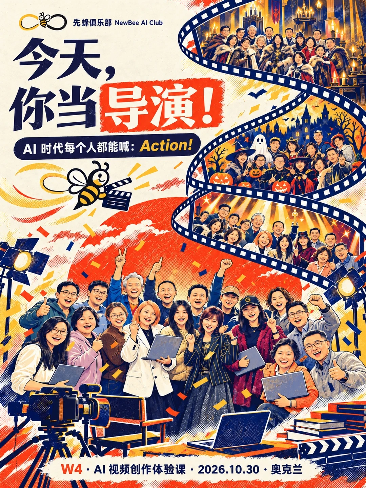
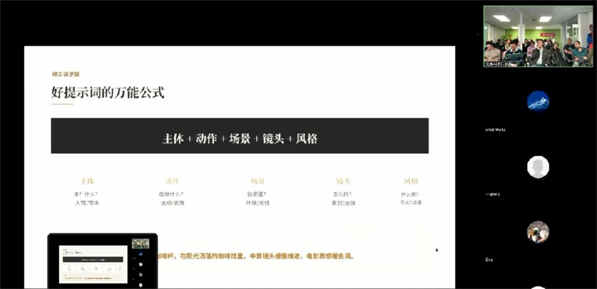
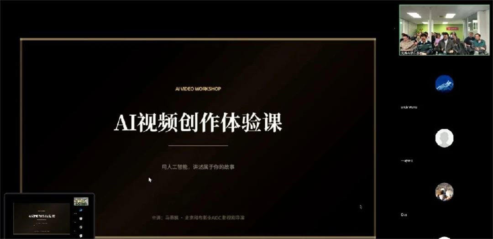
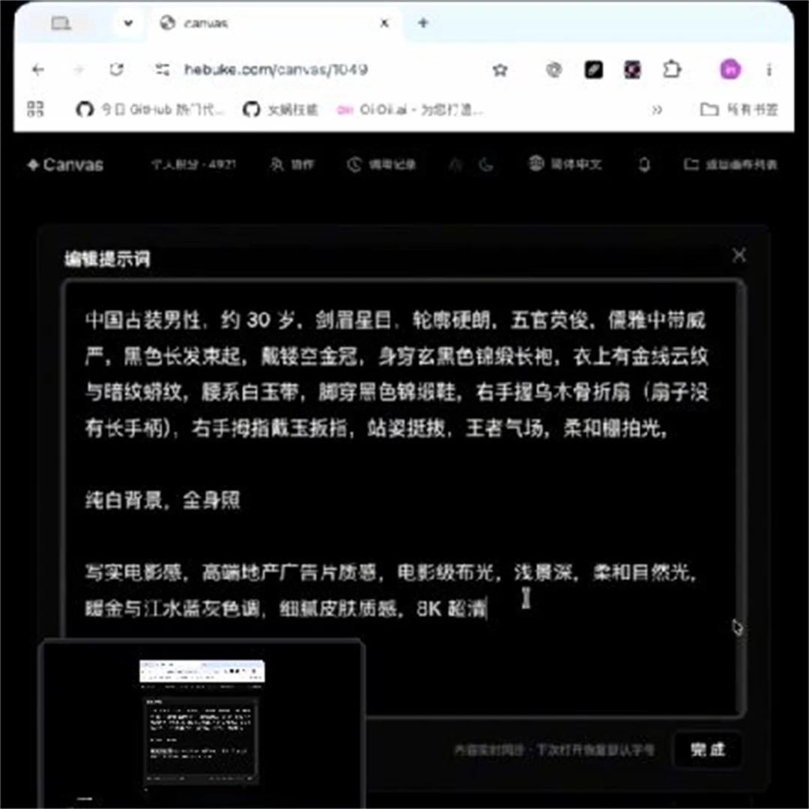
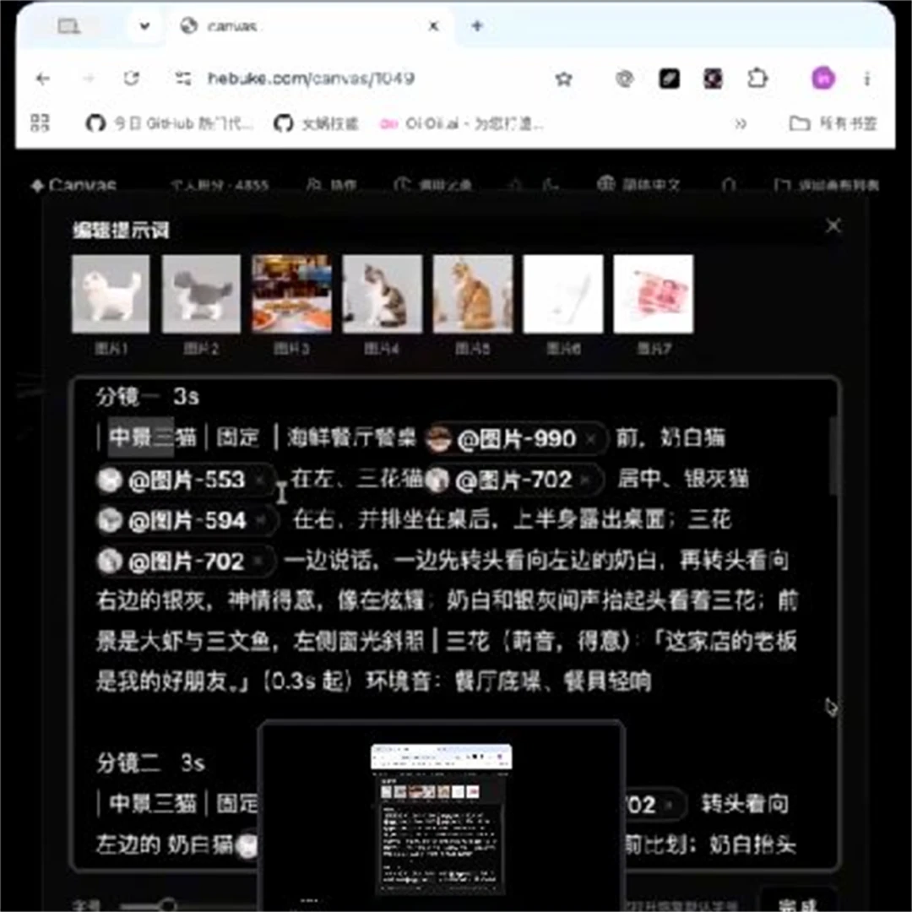

10月30日，先蜂AI俱乐部 Workshop 4「今天，你当导演！」在奥克兰举行。这一次，我们没有把时间留给遥远的概念，而是把“导演权”交到每一位参与者手中。
打开电脑，写下想法，调整画面，让角色行动起来。没有摄影机，没有片场，但每个人都开始认真面对同一个问题：我究竟想让镜头里发生什么？

01 · 不是围观AI， 而是亲手把想法拍出来
有人构思人物，有人设计场景；有人反复调整动作，有人琢磨光线、构图和镜头感。原本安静地存在于脑海中的想象，开始拥有颜色、质感、情绪和节奏。
本次活动特邀 AIGC 影视剧导演马雨枫，带领大家从创意构思、角色设计走向镜头语言，亲身体验 AI 如何把想象变成电影画面。
02 · 一条“导演口令”，让AI听懂你的镜头
AI视频创作看似神奇，真正动手后才会发现：工具只是摄影机，表达才是方向盘。课程里，大家掌握了一条清晰、实用的“导演口令”。
谁？做什么？在哪里？怎么看？什么气质？

同一个创意，只要换一种镜头、光线或风格，就会变成完全不同的作品。当这些问题逐渐清晰，提示词就不再是一串技术指令，而开始像真正的导演语言。
AI不会替你决定想表达什么。它会不断追问：你想让观众感受到什么？

03 · 从一张图到一段戏， 创作发生在一次次调整之间
一段好看的AI视频，很少诞生于第一次点击。先生成，再观察；角色不够准确，重新描述；镜头缺少张力，再换角度；画面有了但情绪不对，就继续调整光线与风格。


大家一边尝试，一边比较，也一边分享彼此的发现。古装人物走进现代空间，日常场景拥有电影质感，熟悉的奥克兰被重新写进不同的故事。
AI让创作的起点变低了，却也让人的判断变得更加重要。真正决定作品的，从来不是按下了哪个按钮，而是做出了怎样的选择。
04 · 当学员作品亮相， 每个人都有自己的电影宇宙
短短的片段里，有脑洞、有幽默、有惊喜，也有属于创作者自己的审美和表达。现场还顺手完成了一张颇有仪式感的电影海报——《奥克兰AI导演联盟》，2026.10.30，震撼上映。
05 · 我们想做的，不只是教会一个新工具
工具会不断更新，但好奇心、表达力、审美和把想法变成作品的能力，会一直留下来。这也是先蜂AI俱乐部持续举办 Workshop 的原因。
我们希望在奥克兰搭建一个真实、开放、可以动手实践的AI学习社区：让对AI感兴趣的人不必独自摸索，让每一次学习都不只停留在“我听懂了”，而是走向“我做出来了”。
下一位导演，也许就是你
Workshop 4 已经杀青，但属于普通人的AI创作才刚刚开场。
继续探索先蜂会的 AI 学习与实践路径，或查看更多活动回顾。
本页根据俱乐部提供的 Workshop 4 正文、原文配图与 W4 活动视频整理。活动于 2026 年 10 月 30 日举行，官网回顾于 2026 年 11 月 1 日发布。主题插画与课程回放截图均已标明。